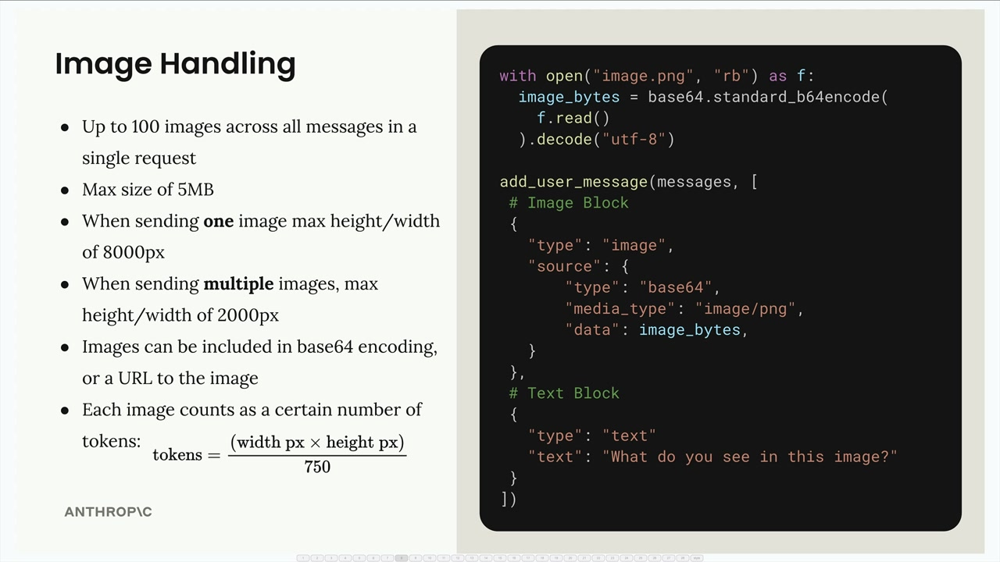
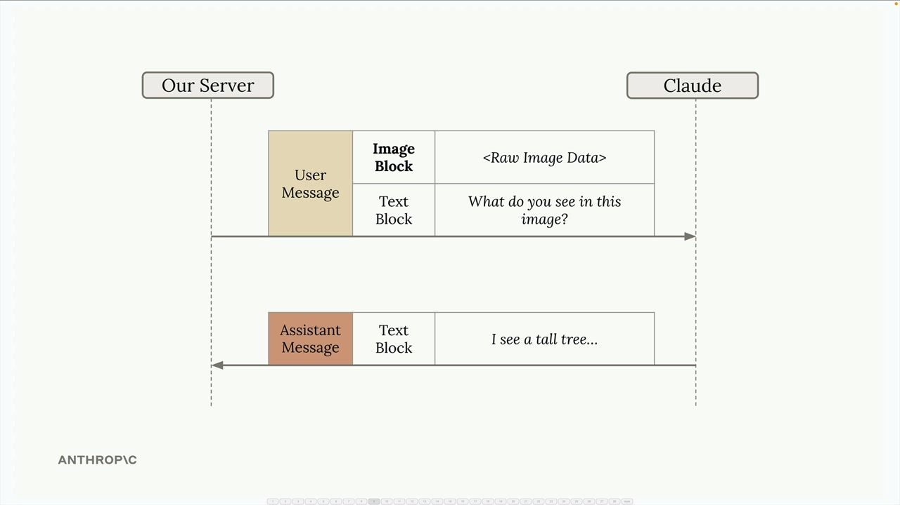
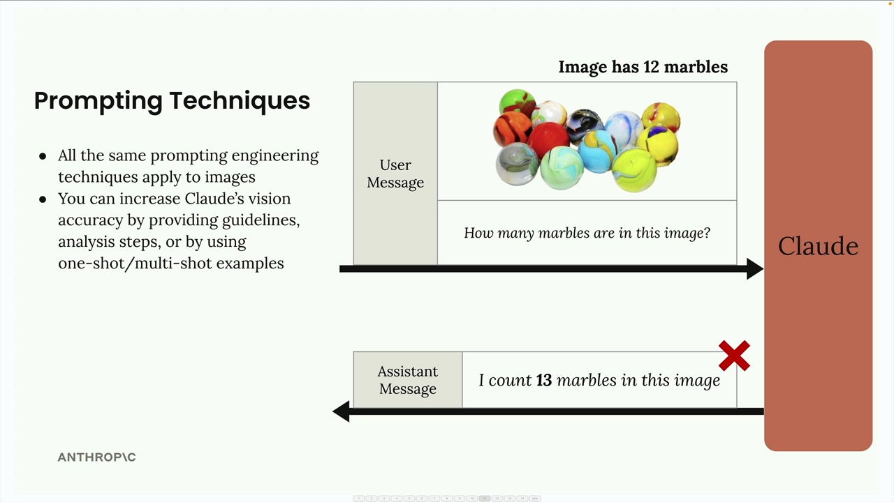
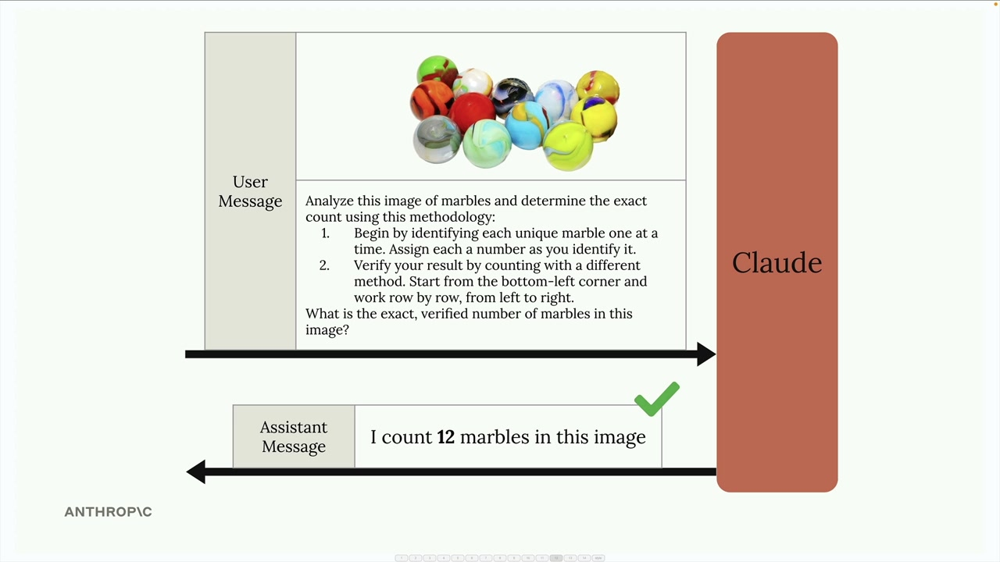
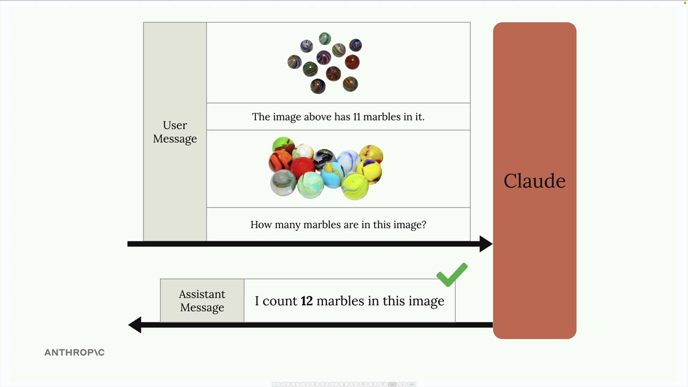
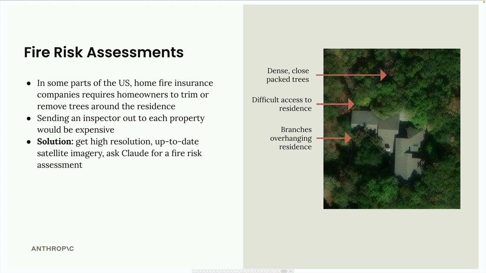

이미지 지원
Claude의 비전 기능을 사용하면 메시지에 이미지를 포함하고 Claude에게 다양한 방식으로 분석을 요청할 수 있습니다. 이미지에 무엇이 있는지 설명하거나, 여러 이미지를 비교하거나, 객체를 세거나, 복잡한 시각적 분석 작업을 수행하도록 요청할 수 있습니다.
이미지 처리 기본 사항

이미지를 사용할 때 기억해야 할 몇 가지 중요한 제한 사항이 있습니다:
- 단일 요청 내 모든 메시지에 걸쳐 최대 100개의 이미지
- 이미지당 최대 크기 5MB
- 이미지 1개 전송 시: 최대 높이/너비 8000px
- 여러 이미지 전송 시: 최대 높이/너비 2000px
- 이미지는 base64 인코딩 또는 이미지 URL로 포함 가능
-
각 이미지는 크기에 따라 토큰으로 계산됩니다:
tokens = (width px × height px) / 750
Claude에게 이미지를 전송하려면 사용자 메시지에 텍스트 블록과 함께 이미지 블록을 포함시킵니다. 구조는 다음과 같습니다:
with open("image.png", "rb") as f:
image_bytes = base64.standard_b64encode(f.read()).decode("utf-8")
add_user_message(messages, [
# Image Block
{
"type": "image",
"source": {
"type": "base64",
"media_type": "image/png",
"data": image_bytes,
}
},
# Text Block
{
"type": "text",
"text": "What do you see in this image?"
}
])메시지 흐름

대화는 텍스트 전용 상호작용과 동일하게 작동합니다. 서버는 이미지 블록과 텍스트 블록이 모두 포함된 사용자 메시지를 Claude에게 전송하고, Claude는 분석 내용이 담긴 텍스트 블록으로 응답합니다.
프롬프팅 기법

이미지에서 좋은 결과를 얻는 핵심은 텍스트에 사용하는 것과 동일한 프롬프트 엔지니어링 기법을 적용하는 것입니다. 단순한 프롬프트는 종종 좋지 않은 결과를 초래합니다. 예를 들어, "이 이미지에 구슬이 몇 개 있나요?"라고 물으면 잘못된 숫자를 반환할 수 있습니다.
다음과 같은 방법으로 Claude의 정확도를 크게 향상시킬 수 있습니다:
- 상세한 지침과 분석 단계 제공하기
- 원샷(one-shot) 또는 멀티샷(multi-shot) 예시 활용하기
- 복잡한 작업을 더 작은 단계로 분해하기
단계별 분석

단순한 질문 대신, Claude에게 분석 방법론을 제공하세요:
Analyze this image of marbles and determine the exact count using this methodology:
1. Begin by identifying each unique marble one at a time. Assign each a number as you identify it.
2. Verify your result by counting with a different method. Start from the bottom-left corner and work row by row, from left to right.
What is the exact, verified number of marbles in this image?원샷 예시

메시지 내에 예시를 제공하여 정확도를 향상시킬 수도 있습니다. 알려진 개수가 있는 이미지를 포함하고 정답을 명시한 다음, 분석하려는 이미지에 대해 질문하세요. 이를 통해 Claude에게 원하는 분석 유형에 대한 기준점을 제공할 수 있습니다.
실제 사례: 화재 위험 평가

다음은 실용적인 적용 사례입니다: 주택 보험을 위한 화재 위험 평가 자동화. 모든 부동산에 조사원을 파견하는 대신, 보험사는 위성 이미지와 Claude의 분석을 활용할 수 있습니다.
이 시스템은 위성 이미지를 분석하여 다음을 식별합니다:
- 주거지 근처의 밀집된 나무들
- 응급 서비스 차량의 접근이 어려운 경로
- 주거지 위로 뻗은 나뭇가지
"화재 위험 점수를 제공하라"와 같은 단순한 프롬프트 대신, 잘 구조화된 프롬프트는 분석을 구체적인 단계로 분해합니다:
Analyze the attached satellite image of a property with these specific steps:
1. Residence identification: Locate the primary residence on the property by looking for:
- The largest roofed structure
- Typical residential features (driveway connection, regular geometry)
- Distinction from other structures (garages, sheds, pools)
2. Tree overhang analysis: Examine all trees near the primary residence:
- Identify any trees whose canopy extends directly over any portion of the roof
- Estimate the percentage of roof covered by overhanging branches (0-25%, 25-50%, 50-75%, 75%+)
- Note particularly dense areas of overhang
3. Fire risk assessment: For any overhanging trees, evaluate:
- Potential wildfire vulnerability (ember catch points, continuous fuel paths to structure)
- Proximity to chimneys, vents, or other roof openings if visible
- Areas where branches create a "bridge" between wildland vegetation and the structure
4. Defensible space identification: Assess the property's overall vegetative structure:
- Identify if trees connect to form a continuous canopy over or near the home
- Note any obvious fuel ladders (vegetation that can carry fire from ground to tree to roof)
5. Fire risk rating: Based on your analysis, assign a Fire Risk Rating from 1-4:
- Rating 1 (Low Risk): No tree branches overhanging the roof, good defensible space around the home
- Rating 2 (Moderate Risk): Minimal overhang (<25% of roof), some separation between tree canopies
- Rating 3 (High Risk): Significant overhang (25-50% of roof), connected tree canopies, multiple vulnerability points
- Rating 4 (Severe Risk): Extensive overhang (>50% of roof), dense vegetation against structure
For each item above (1-5), write one sentence summarizing your findings, with your final response being the numerical rating.이 상세한 프롬프트는 Claude를 체계적인 분석 과정으로 안내하여, 단순한 요청보다 훨씬 더 정확하고 유용한 평가 결과를 도출합니다.
기억하세요: 텍스트에 효과적인 프롬프팅 기법은 이미지에도 동일하게 적용됩니다. 신뢰할 수 있는 결과를 원한다면 단순한 질문에 의존하지 말고 상세하고 구조화된 프롬프트를 작성하는 데 시간을 투자하세요.